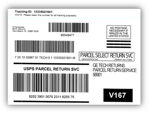
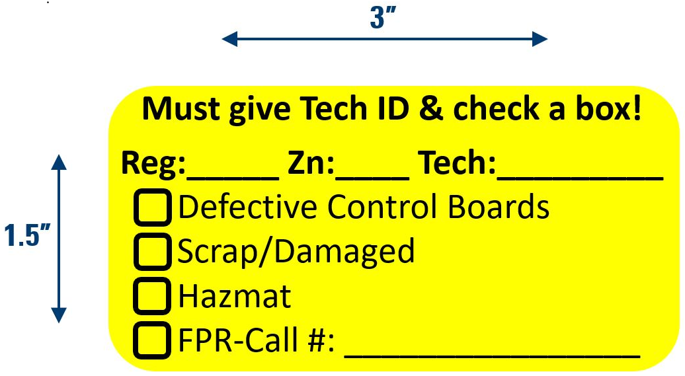
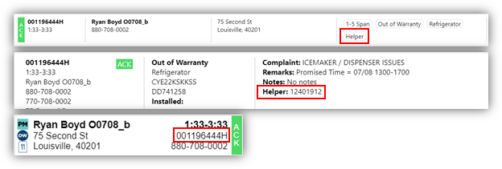
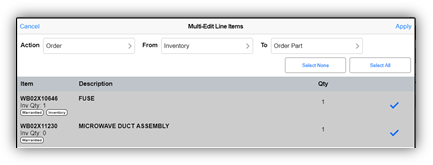
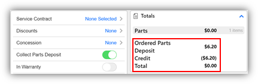
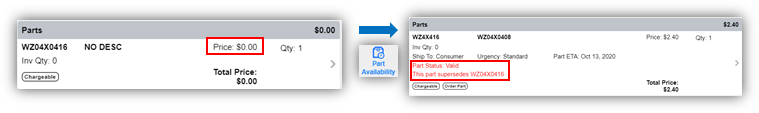
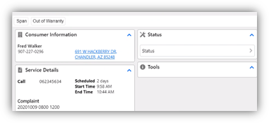

Mobility Training Script
Color Key: Blue = Action Black = Explanation
Mobility Overview - Goal: high level walk-thru of Mobility screens and Mobility lingo (Toolbar, Tabs, and Panels)
• Home Screen (Expand/Collapse)
• Toolbar (Left side icons)
• Schedule
• Tabs and Panels (Tabs = Gray bar, Panels = White boxes)
• Cover Tabs (Overview, Product, Line Items, Estimate, Notes, Forms)
• Route Map
• Parts (Inventory, Truck Stock Daily Parts, Locate, Transfer, Receive, Count-Not using)
• Contacts
• How to Scroll in Mobility (Click and hold)
Scenario 1 - Receive Truck Stock Shipments
1. From the Home screen click Parts icon on the left toolbar, then click the Inventory icon
o The Inventory screen shows all the parts on your truck inventory
o In order to use a part on a call the part must be in your Mobility Inventory
o To get parts in your Inventory you need to Receive them through a shipment
2. Click the Receive icon on the left toolbar
o There are two types of shipments, Truck Stock shipments which are your weekly replenishments and Order Part shipments are for your order part follow-up calls. On Order Part shipments we display the call number, consumer's last name, address, and either Ship to Consumer or Ship to Tech. Call numbers with Mobility are 9 digits compared to TPTP call numbers that are 6 digits.
3. Click on any Truck Stock shipment
o In the shipment Detail screen, you can see the part number and description on the left. On the right you see two columns, one for Sent which is what the shipment is saying it sent you and the other one is Received which is what you are saying you received.
4. Click on the first part
5. Change the Qty from 2 to 3, then click Done
o You can now see that the shipment says it Sent 2 but you are saying you Received 3
6. Click on the second part
7. Change the Qty to 1 and change the Damage quantity to 1, then click Done
o You can now see that Received is 1 and Damaged is 1
o With this being a Truck Stock shipment if you Damage or Short the part another replenishment will be sent out
8. Click on the third part
9. Change the Qty to 0 and mark 2 to be sent back with RMA, then click Done
o You can now see Received is 0 and RMA displays with 2 (RMA will be covered in an upcoming Scenario)
o If a part was physically sent in the shipment but is not listed on the Shipment Detail, you can add that part to the Shipment by clicking the plus sign in the upper-right corner
10. Click +
11. In the Search bar type WR30X10097, click the plus sign to add 1 and click Done
o Scroll down and you can now see that part has been added with a Sent quantity of 0 and a Received quantity of 1
o Once you are done verifying what was Sent and what you are saying you Received you can receive the shipment
12. Click Receive Shipment at the bottom center of the screen, then click Continue
o Those parts are now in your Mobility Inventory
o There are going to be situations where you physically have a part but do not have a shipment for it and you need to add it to your inventory. For example, if you have found a part on your truck or if CR sent out parts directly to the consumer.
o In those cases, you can create a New Shipment to yourself by clicking the plus sign in the upper-right corner of the Receive screen
13. Click +
14. In the New Shipment type WR55X10093 in the Search bar, press Enter on your keyboard
o That part has now been added to the Shipment
o You can also add a part by clicking the plus sign in the upper-right corner
15. Click +
16. In the Search bar •type WR55X10095, Click the plus sign on the right to add 1, then click Done
o Once you have all the parts added you can receive the shipment
17. Click Receive Shipment at the bottom center of the screen, then click Continue
o Those parts have now been added to your Mobility Inventory
o To view previously received shipments you can click the blue Filter icon in the upper-left corner
18. Click the Filter icon, click Received
o Here are the shipments you just received
End of Scenario 1
Trainer: Additional Information
• Mobility Shipment Date is the Shipped Date of the order
• Truck Stock Number on Shipments will match the Order Ref # on the packing slip
• Received Shipment History is retained for 30 days
• When locating a Shipment, the tech can use the Search bar narrow down results
• Inside a Shipment there is a Forms icon in the upper-left corner, this is not utilized for any process currently
• The Edit icon in the upper-right corner of Shipment Detail is not utilized currently, to remove a tech added part, change the Qty to 0 and click Remove on the Remove item from list? pop-up
Scenario 2 - Inventory Search, Adjust, Allocate
1. Click the Inventory icon on the left toolbar
o On the Inventory screen you can search for a part by typing the part number or a description
2. Click in the search bar, type Motor to search for that part type, after it displays then use backspace to clear the search
3. Click on any part
o When you click on a part you will see two options, Adjust and Allocate
4. Click Adjust
o At any time, you can decrease or increase your Inventory quantity by clicking the minus or plus sign
5. Click + to increase the quantity (to 3 or more), then click Done and Yes to save the changes
o You can now see that increase in the Qty column
6. Click Allocate
o Like we did in our shipment scenario the same options of Damaged, RMA, and Shortage can be added to here
7. Click + to add 1 to each type Damaged, RMA, and Shortage, then click Done and Yes to save the changes
o Red Damaged and Shortage quantities will only display for that day for your reference if needed
o Red RMA quantities will continue to display until an RMA is completed (covered in Scenario 15)
Trainer: Additional Information
• A Truck Stock replenishment order will be generated when a part in Inventory is negatively adjusted, damaged, or shorted and causes the Inventory quantity to be less than the Truck Stock level (Truck Stock covered in Scenario 16)
End of Scenario 2
Scenario 3 - IW Completed Call
1. Click the Home icon on the left toolbar, click the Schedule icon
o The first action to complete each day is to Acknowledge your calls so Dispatch can know that you can see all your calls in Mobility
2. Click on each call on the Schedule screen until all calls with the NEW status has an ACK status
3. Click the first call (Beth Hill)
o The way we know this call was scheduled as an In Warranty call is the icon below the tabs bar, there we see this call is an 8-12 Span, In Warranty Dishwasher
o With this being the first call of the day, you just click Open in the upper-right corner
4. Click Open
o Now that the call is open the first thing to do is to verify the Consumer Information
o If the Consumer Information needs to be changed or updated, you can click the edit icon in the upper-right corner of the panel (pen and pad icon)
5. Click the Edit icon In Consumer Information panel
o As you will learn throughout today it is important when possible to get the consumer's email address
6. Click in the Email bar and type in your GE Appliances email address just for training purposes, then click Save
o You can now see that email address displays in the Consumer Information panel
o Around 65% of calls are scheduled with an Email addresses, we will continue repeating the last step today for training practice
o Adding the email address here is important since it will save to all other fields, otherwise you would have to re-type the email address in every email field (Invoice, Estimate, etc.)
7. Click the Product tab
o The next thing to do is to verify the Product Details are correct, this includes the Model, Serial, and Installed date
o If the Product Details needs to be changed, you can click the edit icon in the upper-right corner of the panel
8. Click the Edit icon
o In the Edit Product screen, Model Serial and Installed are required fields, to show that
9. Delete the Serial number by using backspace or by clicking the gray X button
10. Click Save
o As you can see a pop-up will display indicating Serial is required
11. Click OK
12. In the Serial field type any two letters followed by six numbers (a ninth character can also be added), click Save
o After you have verified the Consumer Information and Product Details you would now diagnose the appliance
o Red in Mobility indicates a required field, as you can see with Select Code
o Once you have identified the issue you can now select your Service Codes
13. Click Select Code and choose any Service Code, then select any two remaining Service Codes
o Now we need to complete our Repair Details
14. Scroll down, click the Repair Type and choose Replace since we are replacing a part
o Now we need to enter in a Repair Description, it is important to be as detailed as possible because this information is used throughout the company by our engineers, call centers, and sales team
15. Click in the Repair Description and for training you can just type Test
16. Click the Line Items tab
o Here is where you build your invoice
o There are three ways to add parts to Line Items, the first way is through ONePARTS where you can send your picklist back to Mobility (will show that later), second is by typing a full part number in the search field
17. Click in the search field, type 7C7 (or any Inventory part) and press Enter on your keyboard
o The part now displays
18. Click the Edit icon and delete the part by clicking the red X on the right, then click Done where Edit was
19. Click the plus Add icon, in the search bar type 7C7
o Below you can see the part number, your Inventory quantity, the Description, the Price, and two add columns.
• The Ordered Qty is to add the part as if it was an order part and
• the Qty column is to add the part from your Inventory
20. Click the plus in the Qty column, click Done in the upper-right corner
o In Mobility you do not have to add Labor to In Warranty or Service Contract calls, you only need to add Labor when collecting for Labor
21. Scroll to the bottom of Line Items
o With this being an In Warranty call you can see the In Warranty toggle is green
o You can flip calls between Out of Warranty to In Warranty by clicking the toggle switch
22. Click the toggle switch
o Now you can see in the Totals panel that a Total now shows
23. Click the toggle switch again to change back to In Warranty
24. Choose a Warranty Reason and click Yes
25. Click the Notes tab
o There are two types of Notes
o Invoice Notes display on the consumers Invoice
o Tech Notes are internal notes saved with the call and seen by other GEA employees
26. Click the Add Tech Notes button
27. Type the word Test and click Save
o You can see on the note we capture who made the note along with the date and time
o There is one last step to complete before closing the call, but I want to show you that Mobility will not let you close a call until you have completed all the required steps
28. Click Close in the upper-right corner
o A pop-up now displays telling you that a Status must be selected before closing call
29. Click Fix
o You are now automatically taken to where the required action is, in this case you are taken to the Overview screen where you can see in the Status panel that the red outlined Status must be selected
30. Click Status
o Since we repaired the appliance and no follow-up call is needed you would choose Closed Complete
31. Click Closed Complete
32. Click Reason right below Status
33. Click Completed Call
34. Click Close
o On the Invoice Signature screen, I want to point out two things
o First, Signature is not required to close a call, we do not want consumers touching your laptop
o Second you will notice in the bottom-left corner that because we updated the email first thing, it prepopulates in this Email field for you
o If a consumer does not have an email address to receive their Invoice you can type in service.receipts@geappliances.com to get a paper copy mailed out
o Mail out receipts should only be used as an exception not the rule. Get the consumer's email if possible.
o Once we start running calls in Mobility, we no longer be using printers
35. Click Complete, then click Continue
o You will see now that call will go to the bottom of the Schedule screen and now displays a CLS closed status
o It is important to know, unlike TPTP, that once a call is closed in Mobility it cannot be re-opened
End of Scenario 3
Trainer: In GuideMe - All Guides search ONeParts, click the green play button to show the video and provide verbal instructions to the group on the integration with Mobility and ONePARTS
Trainer: Cover Blue Tool buttons on Schedule screen (these can be used at any time)
o NewFI - Launches NewFI application, no current Alert in Mobility that it is a NewFI product
o ONePARTS - Just covered by Trainer
o GEA - Launches geappliances.com and passes the first 6-characters of the Model number
o TAG - Launches Tag website and passes the first 6-characters of the Model number
o Loyalty - Launches the Loyalty website and passes your Tech ID, consumer name and email must be entered by the tech
Scenario 4 - OW Order Part
1. On the Schedule screen click the first Ryan Boyd call
2. With this being our second call of the day click Start Travel in the upper-right corner
o Start Travel makes the call change to an En Route status, if the consumer has signed up for Service Tracker messages, they would now receive the En Route notification
o Once the tech arrives at the address you would click Stop Travel, then Open
3. Click Stop Travel, then click Open
o As you can see, we have a New Alert pop-up, it is always good practice to see what the alert is because we have alerts for things like recalls and Factory Work Programs
4. Click View Alerts
o In this case it is a reminder to offer to sell water filters because it is a refrigerator call
5. Click on the Alert to acknowledge it, click Accept, then click Save
6. Click the Overview tab
o The first thing we always want to do is to verify the Consumer Information
o If the Consumer Information needs to be changed or updated, you can click the edit icon in the upper-right corner of the panel (pen and pad icon)
7. Click the Edit icon
8. Click in the Email bar and type in your GE Appliances email address just for training purposes, then click Save
o You can now see that email address displays in the Consumer Information panel
9. Click the Product tab
o The next thing to do is to verify the Product Details are correct
10. Click the Edit icon in the Product Details panel
o As you can see, we are missing an Installed date
11. Click the white space next to Installed
o On the calendar pop-up the left/right arrows change the month and the up/down arrows changes the year
12. Click the down arrow twice and click on a date, then click Save
o After you have verified the Consumer Information and Product Details you would now diagnose the appliance
o Once you have identified the issue you can now select your Service Codes
13. Click Select Code and choose any Service Code, then select any two remaining Service Codes
o Now we need to complete our Repair Details
14. Scroll down, click the Repair Type and choose Follow-up Required since we are ordering a part
15. Click in the Repair Description and for training you can just type Test
16. Click the Line Items tab
o For this Out of Warranty call we need to add parts and labor
17. Click the plus Add icon on the right
18. In the search bar type WR30X10097
19. Once the part displays click the plus sign under Ordered Qty to add the part
20. Now click the word Clear right above that
21. To add Labor, click the Brand filter on the left, choose Cafe
22. Click the Product Line filter, choose Refrigerator
o At the bottom you can now see different labor items
o In TPTP you entered in an estimated repair time to get a Labor price, in Mobility you will choose estimated repair time range
o In this case let's say it is a 10-minute repair, so we would select the first labor item with 1 to 15
23. Click the plus sign to add the 75-dollar labor, then click Done
o Now that we have added our parts and labor, we can see our Total for this repair is $345.85
24. If you want to add a discount to the call, scroll to the bottom of Line Items and click the Discounts row
o Here you have the options of 10%, 25%, or 50% off Parts and/or Labor
o If Consumer Relations offers a discount in the call notes be sure to use the CR Discount below
25. Click the toggle switch on the 25% off Parts, then click Done
o You now can see the discount in the Totals panel
26. Scroll to the top of Line Items
o Now we need to make sure to check Part Availability
27. Click Part Availability
o Once it is done Checking you can see the Part Status is Valid and we have our Part ETA
o Now we need to get approval from the consumer about the cost of the repair and then save our estimate
28. Click Save Estimate
o On the Estimate Signature screen, you see in the bottom-left corner the email address displays from when we first updated the call
o You also have option to not email the estimate to the consumer by unchecking the Email Estimate box, but let us leaved it checked for this scenario
o Again, signature is also not required
o Lastly, in the upper-right corner you can see the two options of Accept and Decline
o Depending on which one you choose, the consumer will be sent two different Estimate PDFs
o Accept sends an Estimate that says Thank you for choosing GE Appliances Factory Service
o Choosing Decline sends an Estimate with instructions on how to schedule the repair if they decide to do it later and we also provide the Rebate form
29. Click Accept
30. By clicking Accept you now have saved the estimate (same with selecting Decline), to show you that click the Estimate tab
o Here you can see the estimate we just saved with an Accepted status
31. Click the blue arrow on the right
o By clicking into the estimate, you can see all the Line Items and I will explain why that is important on our next step
32. Click the Line Items tab to return to Line Items
o Now we need to adjust Line Items to the Total that we are collecting from the consumer today
33. To remove Labor, click the Edit icon and click the red X on the right, then click Done where Edit was
34. Scroll to the bottom and click the toggle switch on Collect Parts Deposit
o In the Totals panel you can now see we are only going to collect the Trip Charge and a 50-dollar parts deposit
o With Mobility Collect Parts Deposit is required for Out of Warranty order part calls, if the total parts cost is more than 50-dollars you will only collect 50-dollars, but if the total parts cost is less than 50-dollars you will collect the entire parts amount
o For example, if the part was 40-dollars, clicking Collect Parts Deposit would make the deposit 40-dollars
o Now we need to schedule our follow-up call
35. Click the Overview tab
36. Click Status
o Since we need to order parts to repair the appliance you would choose Closed Incomplete
37. Click Closed Incomplete
38. Click Reason right below Status
39. Click Order Parts
40. Now click Schedule Follow-up
o Here under the gray tab bar you can see our Parts ETA from Line Items displays and below that is the following day which is our first potential return date
41. Click Search
o Mobility will now display all available dates and spans
o A big improvement from TPTP is Mobility will only display appointment spans where there is time to complete that repair, which will help prevent any overbooking and having to contact consumers to reschedule
o One thing to note is if you send the parts Ship to Consumer, appointment spans will show if any tech who runs that zip has availability and on the other hand if you send parts Ship to Technician it will only show your availability
o If scheduling a follow-up call in a zip you do not normally run, Mobility will require you to use Ship to Consumer for order parts
42. Click any appointment span, then click Schedule
43. Click OK
o You can now see the chosen day, date, and span next to Follow-up
o If the consumer needs a different date or span, you can click the red X and schedule a new follow-up date and span\
44. Click the Notes tab
o Invoice and Tech Notes will save and display on the follow-up call, you will see these in Overview - Service Details panel under Notes
45. Click the Add Tech Notes button
46. Type the word Test and click Save
47. Click Close, then click Pay in the upper-right corner
o This is the new integrated payment process with Mobility, once you start closing calls in Mobility you no longer are going to use the Clover Go app and credit card reader
o On the Payment screen there are three options, Bill To which we will cover later, Pay by Phone which is the same as you have today and available to you when you're in a poor internet connection area
48. Click Pay by Phone
o Here you can see the phone number next to Approval Code, so like today you would call this number and give the agent the consumer's credit card information over the phone, the agent would then give you a 6-digit Approval Code that you would enter in here
49. For now, click Cancel
o Our preferred method of payment is the new Pay by Link method
50. Click Pay by Link
o Pay by Link allows you to send an email or text message to the consumer so they can enter in their own payment information like they do today with other companies and applications
o The benefit of this process is that you no longer need to handle consumer's personal payment information
o In the Pay by Link screen you see the email address and the primary phone number from the call is prepopulated, it is important when doing text that you verify it is a Mobile number
o The conversation with the consumer would go something like •Mr. Boyd, I can send you a link for you to enter in your payment for today's service, would you prefer an email or text message•, if the consumer chooses text you would respond by saying something like •is that number ending in 0004•
o If the consumer does not have access to email or text message you can always uncheck both boxes and enter in the payment information yourself
51. For training purposes check both boxes and change the Mobile number to your work phone number, then click Send
o Once the link is sent you will see the same link the consumer receives displayed in Mobility under Payment URL
52. Click the hyperlink
o A browser window will open and will display the Total, it will also give the option of Pay with Credit Card or Pay with Check
o If the consumer wants to use two forms of payment that option is available at the bottom
53. Click Pay with Credit Card
54. Enter in the test Credit Card number (https://www.getcreditcardnumbers.com, select a number from Visa), any first and last Name, any future expiration date like 02-23, and the CVV code of 999, then click Pay
55. Once it verifies payment you will see a Transaction Approved pop-up, click OK and reopen Mobility from the bottom toolbar by clicking the Mobility icon
o In the Payment screen you now can see the Balance Due is zero and payment method below the URL
56. Click Close, then click Continue
End of Scenario 4
Scenario 5 - OW Call OP Return
There is not a training call to use for the order part return call Scenario
1. Using MyGuide locate Scenario 05 and click the green play button for a ShowMe video
2. Expand the window by clicking the double arrow icon in the upper-right corner
3. Click through each slide by clicking the green arrow on the right and explain each step
•To recap on Out of Warranty order part return calls, you first receive your shipment using the Jump To feature, then use Estimate History to get the Labor amount, and lastly Edit Line Items to collect the remaining balance
End of Scenario 4
Scenario 6 - OW Call Complete, Mail-out
1. On the Schedule screen click on a Ryan Boyd call with an Acknowledged status
o Notes can be added to a call before opening it
2. Click the Notes tab
3. Click the Add Tech Notes button
4. Type the word Test and click Save
o In TPTP there is a check box to send a copy of your note to Dispatch, in Mobility that is accomplished from the Overview screen
5. Click the Overview tab
o In the Tools panel you will see various hyperlinks that can be used for communication with others in our business
6. Click the Notes to Dispatcher link
o An outlook email will display, it will be prepopulated with your dispatcher's distribution group, the Call Number and your Tech ID in the Subject line, and in the body of the email you will see the notes you just saved
o You can always add additional comments to your dispatcher or just click Send
7. Click the X in the upper-right corner to close the email
8. The other Tools links are:
o Dispatcher - a generic email template to message about needed information or assistance with that call
o Call Details - a email with all the call information and a blank To line, this can be used if wanting to send the call details to anyone of your choosing, like another tech or your CSM
o Parts Issues - to report any parts issues to the parts warehouse
o Product Team - to share any product suggestions or repair findings with the Product Quality Engineers
o EHS Reporting - to report any safety concerns or near misses with the Safety team
o SDS Request - will be covered later
9. Click Start Travel in the upper-right corner
10. Click Stop Travel, then click Open
11. Click View Alerts
12. Click on the Alert to acknowledge it, click Accept, then click Save
13. Click the Overview tab
o The first thing we always want to do is to verify the Consumer Information
o If the Consumer Information needs to be changed or updated, you can click the edit icon in the upper-right corner of the panel (pen and pad icon)
14. Click the Edit icon
15. Click in the Email bar and type in your GE Appliances email address just for training purposes, then click Save
o You can now see that email address displays in the Consumer Information panel
16. Click the Product tab
o The next thing to do is to verify the Product Details are correct
17. Click the Edit icon in the Product Details panel
o As you can see, we are missing an Installed date
18. Click the white space next to Installed
o On the calendar pop-up the left/right arrows change the month and the up/down arrows changes the year
19. Click the down arrow twice and click on a date, then click Save
o After you have verified the Consumer Information and Product Details you would now diagnose the appliance
o Once you have identified the issue you can now select your Service Codes
20. Click Select Code and choose any Service Code, then select any two remaining Service Codes
o Now we need to complete our Repair Details
21. Scroll down, click the Repair Type and choose Replace since we are using a part
22. Click in the Repair Description and for training you can just type Test
23. Click the Line Items tab
o For this Out of Warranty call we need to add parts and labor
24. Click the plus Add icon on the right
25. In the search bar type 7c7
26. Once the part displays click the plus sign under Qty to add the part from Inventory
27. Now click the word Clear right above that
28. To add Labor, click the Brand filter on the left, choose Cafe
29. Click the Product Line filter, choose Refrigerator
30. Click the plus sign to add the 75-dollar labor, then click Done
o Now let us say the consumer wants to buy filters
31. Click in the search bar and type RPWFE3PK, press enter on the keyboard
o A pop-up screen will display when you try to add a part and have no Inventory
o You have the option to Locate Part which checks other techs Inventory or the option to Order Part
32. Click Order Part, then click OK on the pop-up
o On the filter in Mobility it now has a tag that says Order Part
o In Mobility you will never see the word Mail-out, the way Mobility works is if you close a call complete with Order Parts on Line Items those parts will be mailed out to the consumer
o Another tag that you will see on the part is Non-Discountable, starting with Mobility you now can sell filters on the same invoice without having to do a separate part sale
o So now you can sell filters on In Warranty, Service Contract, and Out of Warranty calls even with parts discounts
33. Click Part Availability to make sure the water filters are available
34. Scroll to the bottom of Line Items and click Discounts
35. Add any parts discount by clicking the toggle switch, then click Done
o In the Totals panel you can see that the discount only applied to other part and not the filters
36. Click the Overview tab
37. Select the call Status as Closed Complete, Complete call
38. Click Close
39. Click Close, then click Pay in the upper-right corner
40. Click Pay by Link, then click Send
41. Click the hyperlink under Payment URL
o A browser window will open and will display the Total
42. Click Pay with Credit Card
43. Enter in the test Credit Card number, any first and last Name, any future expiration date like 02-23, and the CVV code of 999, then click Pay
44. Once it verifies payment you will see a Transaction Approved pop-up, 1click OK and 2reopen Mobility from the bottom toolbar by clicking the Mobility icon
o In the Payment screen you now can see the Balance Due is zero and payment method below the URL
45. Click Close, then click Continue
End of Scenario 6
Trainer: Additional Information
• On Bill To calls, water filter sales should be done on a separate Part Sale, this ensures that if the account has CSP pricing that the filters will be billed at the correct amount
• If a Water Filter needs to be covered by a warranty with zero cost to the consumer, have Dispatch send the part to the consumer or use one from your Inventory and negatively Adjust the quantity (this should be a rare exception)
Scenario 7 - OW OP, Long Job, Helper, Non-Chargeable Part
1. On the Schedule screen click on a Ryan Boyd call with an Acknowledged status
2. Click Start Travel in the upper-right corner
3. Click Stop Travel, then click Open
4. Click View Alerts
5. Click on the Alert to acknowledge it, click Accept, then click Save
6. Click the Overview tab
7. Click the Edit icon in the Consumer Information panel
8. Click in the Email bar and type in your GE Appliances email address just for training purposes, then click Save
o You can now see that email address displays in the Consumer Information panel
9. Click the Product tab
o The next thing to do is to verify the Product Details are correct
10. Click the Edit icon in the Product Details panel
o As you can see, we are missing an Installed date
11. Click the white space next to Installed
o On the calendar pop-up the left/right arrows change the month and the up/down arrows changes the year
12. Click the down arrow twice and click on a date, then click Save
o After you have verified the Consumer Information and Product Details you would now diagnose the appliance
o Once you have identified the issue you can now select your Service Codes
13. Click Select Code and choose 8-Refrigerant System, then select any two remaining Service Codes
o Now we need to complete our Repair Details
14. Scroll down, click the Repair Type and choose Follow-up Required since we are ordering a part
15. Click in the Repair Description and for training you can just type Test
16. Click the Line Items tab
o For this Out of Warranty call we need to add parts and labor
17. Click the plus Add icon on the right, in the search bar type WR87X10008
18. Once the part displays click the plus sign under Order Qty to add the part
19. Now click the word Clear right above that
20. To add Labor, click the Brand filter on the left, choose Cafe
21. Click the Product Line filter, choose Refrigerator
o In Mobility for two-man labor you just double the labor
22. Click the plus sign twice to add 91-120 minutes of Labor, then click Done
23. Click anywhere on the Compressor part
o In Item Details you have the option to change the Ship To from Consumer to Technician (leave as Consumer)
o You also have the option to change the Urgency from Standard to Expedited when the situation calls for it, for most parts this will get the Part ETA to be one day sooner
o You can also remove allowing individual parts from being affected by Discounts or Concessions
o Lastly, in TPTP if you are covering a part under warranty you use Cost Allocate the Warranty, in Mobility to cover an individual Line Items under Warranty you uncheck the Chargeable box
o In this scenario the part is covered under a 5-year sealed system warranty
24. Uncheck the Chargeable box, then click Done
o Now that we have added our parts and labor, we want to make sure the part is available
25. Click Part Availability
o As you can see this part supersedes, so WR87X10008 is automatically replaced with WR87X10024
o When a part supersedes to a new part, you do have to uncheck the Chargeable box again
26. Click on the part, uncheck Chargeable and click Done
o Next, we want to save our estimate
27. Click Save Estimate, then click Accept
o Now we need to adjust Line Items to the Total that we are collecting from the consumer today
28. To remove Labor, click the Edit icon and click the red X on the right, then click Done where Edit was
o Since the part cost is zero, there is no need to collect parts deposit
29. Click the Overview tab
30. Click Status
o Since we need to order parts to repair the appliance you would choose Closed Incomplete
31. Click Closed Incomplete
32. Click Reason right below Status
33. Click Order Parts
34. Now click Schedule Follow-up
o At the bottom of the Schedule Follow-up screen you will see a Scheduling Request panel and a Shipping Request panel
o The Scheduling Request panel allows you to request additional repair time, you can choose between Double or Triple Duration of your standard call time
o (Note: This may vary between techs but typically ranges between 30-45 minutes, the tech can determine their standard call time by seeing the common time allotted for calls on the Schedule screen)
35. Click Additional Repair Time Request, then click Double Duration
o When adding time remember that only appointment slots with that time available will display
o You can also request a Helper by clicking the Helper Request box, it is still good practice reach out to your dispatcher to verify a helper is available for when you want to return before closing the call
o When additional time or a helper is requested an email goes to your CSM, in the Additional Details field you can type notes that will display in that message
o Below Scheduling Request is Shipping Request, here you can request Inspect or Overpack on the order part shipments if the part has arrived with an issue or damage
36. Click Part Order Request, then click Inspect and Overpack
o It is important to give detail on the request as to the Location and Type of Damage
o Click in Request Details, type test for training purposes
o Next to Search is the first potential return date for service, when clicking Search, Mobility will bring back 9-days of availability following that date
o If the consumer wants service beyond that you can click the date and change it
37. Click the return date field next to Search, choose a date 2-weeks out from the date shown
38. Click Search
o •you can see 9-days of availability following that date, you can view additional days by clicking the blue arrow on the right of the screen
39. Click any appointment date and span, click Schedule
40. Click OK on the pop-up
41. Click Close, then click Pay in the upper-right corner
42. Click Pay by Phone, enter any 6-digits in Approval Code, then click Save
43. Click Close, then click Continue
End of Scenario 7
Trainer: Additional Information
• Two-man labor pricing is not connected to Helper scheduling, they are two independent processes
• Checking part status for Supercedures, NLA, etc. can only done on a call in Line Items with Part Availability, this can be done on any un-Opened call and removed if needed
• Closed Incomplete - Dispatch Ordering Parts: When this is selected no follow-up call or part order will be placed, the tech must contact dispatch with the specifics of the request, some examples would be:
o Emergency Shipping (Overnight & Next Day)
o Forcing Calls (Emergency Return or No Time Available)
o Part Research or Part Ordering Issues
Scenario 8 - OW Decline Estimate
1. On the Schedule screen click on a Ryan Boyd call with an Acknowledged status
2. Click Start Travel in the upper-right corner
3. Click Stop Travel, then click Open
4. Click View Alerts
5. Click on the Alert to acknowledge it, click Accept, then click Save
6. Click the Overview tab
7. Click the Edit icon in the Consumer Information panel
8. Click in the Email bar and type in your GE Appliances email address just for training purposes, then click Save
o You can now see that email address displays in the Consumer Information panel
9. Click the Product tab
o The next thing to do is to verify the Product Details are correct
10. Click the Edit icon in the Product Details panel
o As you can see, we are missing an Installed date
11. Click the white space next to Installed
o On the calendar pop-up the left/right arrows change the month and the up/down arrows changes the year
12. Click the down arrow twice and click on a date, then click Save
13. Click Select Code and choose any Service Code, then select any two remaining Service Codes
o Now we need to complete our Repair Details
14. Scroll down, click the Repair Type and choose Replace since we are using a part
15. Click in the Repair Description and for training you can just type Test
16. Click the Line Items tab
o For this Out of Warranty call we need to add parts and labor
17. Click the plus Add icon on the right
18. In the search bar type 7c7
19. Once the part displays click the plus sign under Qty to add the part from Inventory
20. Now click the word Clear right above that
21. To add Labor, click the Brand filter on the left, choose Cafe
22. Click the Product Line filter, choose Refrigerator
23. Click the plus sign to add the 75-dollar labor, then click Done
24. Scroll down on Line Items, click Discounts
25. Choose any Labor discount, then click Done
26. Scroll back to the top to click Save Estimate and click Decline, then click Decline to confirm decision
o With the consumer Declining the repair you need to remove all Line Items except for the Trip Charge
27. Click the Edit icon, delete the part and labor, then click Done
28. Click the Overview tab
29. Click Status, then click Closed Complete since not follow-up call is needed
30. Click Reason, then choose Invoice for Estimate
31. Click Close, then click Pay in the upper-right corner
32. Click Pay by Phone, enter any 6-digits in Approval Code, then click Save
33. Click Close, then click Continue
End of Scenario 8
Trainer: Additional Information
• Have the Techs check their email to see the different examples of Estimate and Invoice PDFs
Scenario 9 - Service Contract, Complete
1. On the Schedule screen click on the Chris Kay call
o You can see that our icons tell us this is a Service Contract call, you will also notice the word Concession next to it
o I will explain that once we go to Line Items
2. Click Start Travel in the upper-right corner
3. Click Stop Travel, then click Open
4. Click the Edit icon in the Consumer Information panel
5. Click in the Email bar and type in your GE Appliances email address just for training purposes, then click Save
o You can now see that email address displays in the Consumer Information panel
6. Click the Product tab
o The next thing to do is to verify the Product Details are correct
o The Model and Serial show as UNK-UNK, Mobility will let you close the call with UNK in the event the is not fully legible
7. Click the Edit icon in the Product Details panel
8. Change the Model and Serial to a valid Model and Serial
o The Model field requires a minimum of 6 characters
o The Serial field requires 2 letters followed by 6 numbers (and an additional character if needed)
9. Click Save after updating
10. Click Select Code and choose any Service Code, then select any two remaining Service Codes
11. Scroll down, click the Repair Type and choose Replace since we are using a part
12. Click in the Repair Description and for training you can just type Test
13. Click the Line Items tab
14. Scroll to the bottom of Line Items
o Here you will see the Service Contract provider is AHS, you will also see a Service Contract Concession that covers the Total of the repair
15. Click the plus Add icon on the right
16. In the search bar type 7c7
17. Once the part displays click the plus sign under Qty to add the part from Inventory, then click Done
18. Click the Overview tab
19. Click Status, then click Closed Complete
20. Click Reason, then choose Completed Call
o You now could close
o For training purposes lets return to Line Items
21. Click the Line Items tab
22. Click on the Service Contract row and click on AHS at the top in black font
23. Click No Service Contract, then click Save
o Now you can see there is no Service Contract on the call and a Total now displays
o The next item we want to cover is flipping a call to Service Contract
o Currently the only provider we have an agreement to get authorization from to flip a call is Assurant
o All other Service Contract providers must be contacted, and the call must be setup by them
24. Click the Service Contract row and click Select Service Contract, then click Assurant
o Now you would contact Assurant in order to get an 8-digit Authorization Code
25. Click in the Authorization Code field and type any 8-digits for training, then click Save
o You can now see a Service Contract Concession has been added to the call
26. Click Close
27. Click Complete, then click Continue
End of Scenario 9
Trainer: Additional Information
• To sell a Service Contract, on the Overview tab in the Tools panel you can click the blue Service Contract button to launch the Assurant Sales portal, this can be done at any time
• In order to flip a call to Assurant, the Assurant agent will need the 6-digit FS Call number, this will be provided on the Mobility Overview tab in the Service Details panel
• For scheduled Service Contract calls where it is discovered at service that it is a none GEA Product, use Service Codes 0-9-6 and choose a Status of Closed Complete - Completed Repair
• For scheduled Assurant calls, the consumer's contract expiration date will display in the call Notes
Scenario 10 - Bill To, Order Part
1. On the Schedule screen click on the Ted Wood call
o You can see that our icons tell us this is a Bill To call
2. Before opening the call click the Forms tab
o Here is where you see the Bill To information scheduled on the call
3. Click Start Travel in the upper-right corner
4. Click Stop Travel, then click Open
5. Click the Edit icon in the Consumer Information panel
6. Click in the Email bar and type in your GE Appliances email address just for training purposes, then click Save
o You can now see that email address displays in the Consumer Information panel
7. Click the Product tab
o The next thing to do is to verify the Product Details are correct, in this case they are
8. Click Select Code and choose any Service Code, then select any two remaining Service Codes
9. Scroll down, click the Repair Type and choose Follow-up Required since we are ordering a part for a return call
10. Click in the Repair Description and for training you can just type Test
11. Click the Line Items tab
o The important thing to know for Bill To calls is that Bill To is only a method of paying for a call, so all Bill To calls we will treat as an OW call until we get to payment
12. Click the plus Add icon on the right, in the search bar type WB02X10624
13. Once the part displays click the plus sign under Order Qty to add the part
14. Now click the word Clear right above that
15. To add Labor, click the Brand filter on the left, choose GE Appliances
16. Click the Product Line filter, choose Microwave - Over the Range
17. Click the plus sign to add the 75-dollar labor, then click Done
18. Click Part Availability, verify the part Status is valid and a part ETA displays
19. Click Save Estimate and click Accept
o By clicking Accept you now have saved the estimate
o Now we need to adjust Line Items to the Total for today's service
20. To remove Labor, click the Edit icon and click the red X on the right, then click Done where Edit was
21. Scroll to the bottom and click the toggle switch on Collect Parts Deposit
22. Click the Overview tab, choose your Status of Closed Incomplete and Reason as Order Parts
23. Click Schedule Follow-up, then click Search
24. Click any appointment date and span, click Schedule
25. Click OK on the pop-up
26. Click Close, then click Pay in the upper-right corner
o On the Payment screen do not close the call after this next step
27. Click Bill To and click Save
o Now you can see the Balance Due is zero and Bill To is the selected method of payment, you now could close the call but let us go back into the call
28. Click Cancel, then click the Forms tab
29. Click the blue X to the right of Bill To Information, then click Clear
30. Expand the Bill To Information form by clicking the blue down arrow
o With the Bill To form blank, click Close to try a close the call
31. Click Close
32. Notice a pop-up displays saying •Bill To Information required. Contact Dispatch to update. Verify Bill To Information displays before Close.•
o Unlike TPTP you will notice there is not a Verify button for a tech entered Account Number, with Mobility our preferred method of updating a call with Bill To information is to reach out to Dispatch to update the call with the account information
o Once it is updated, the Bill To information will display here and the call can be closed
o A backup method of adding Bill To information to a call in the event of it being after Dispatch hours or if it is an account where you are absolutely sure it is a good Account Number, you then can type in the 5 character account number in the Account Number field
o The important this to know is that the system does not validate it's a good Account Number until after the call is closed, so if a bad Account Number or mistyped Account Number is entered there is a risk the call will not be properly billed
33. Click in the Account Number filed and type in T6P17
o Click Close, since you already selected Bill To as the method of payment you can now click Complete, then Continue
End of Scenario 10
Trainer: Additional Information
• For Bill to Bookless, tech should contact Dispatch to update the call with the Bill To Bookless information, techs no longer need to get or use an authorization number
• Like TPTP, Mobility cannot tell you if the Bill To call has CSP pricing, treat all Bill To calls like standard OW calls and any billing adjustments will be made after call closure
• You cannot undo Bill To payment selection if you click Bill To and click Save, if that happens you must go through Dispatch to setup a new call
Scenario 11 • Part Sale
1. On the Schedule screen click on a Closed Beth Hill call
o In Mobility you can create a Part Sale or Pick-up Call from an un-opened, opened, or closed call
o It is important to close the primary call first before closing the Part Sale or Pick-up Call
2. Click the 3-dot icon in the upper-right corner, then click New
3. Under Choose Template click Pick-up Call
o Here you will see various templates which include Pick-up Call, Part Sale, Part Sale - New Consumer which is for a Part Sale to a random consumer that you did not service that day, and then we have part sale templates that are prepopulated with the filters listed
4. Click on Part Sale, then click Done
o On the Schedule screen you now can see a New call has been created
o You know that this is your Part Sale because the Call number ends in .1
5. Click Open on the call ending in .1
o Notice all the Consumer Information has populated on the Part Sale
o The only steps required for a Part Sale is adding the Part in Line Items and choosing Status
6. •Click the Line Items tab, click the plus Add icon
7. In the upper-right corner change Catalog to Inventory
8. On any Inv Qty part click the plus sign to add from Inventory (do not click Ordered Qty), then click Done
9. Click the Overview tab
10. Click Status, then click Closed Complete
11. Click Reason, then click Completed Call
12. Click Close, then click Pay
13. Click Pay by Phone, enter any 6-digits in Approval Code, then click Save
14. Click Close, then click Continue
15. Back on the Schedule screen click on the same Closed Beth Hill call that you just used
16. Click the 3-dot icon in the upper-right corner, then click New
17. Click under Choose Template where it says Pick-up Call
18. Click on Part Sale - New Consumer, then click Done
1. In this situation let us say an apartment complex with a Bill To account called and wanted parts mailed out to them
2. On the Schedule screen you now can see a New call has been created
3. You will now see the Part Sale ends in .2 since it is our 2nd one off this consumer
19. •Click Open on the call ending in .2
1. Notice in the Consumer Information panel it says Name & Phone Required and Complete Address Required
20. Click the edit icon in the Consumer Information panel
21. Delete Complete Address Required, then type any Address, City, State, and Zip Code
22. Delete Name & Phone Required, then type any First Name, Last Name, Email, and Phone Number, then click Save
23. Click the Line Items tab, click the plus Add icon
24. Type WR30X10097 and add as Ordered Qty
25. Click Part Availability to make sure the part has a Status: Valid and Part ETA
26. Click the Forms tab
27. Click the blue arrow to expand the Bill To Information form
28. Type PNP46 in the Account Number field
1. It is important to reiterate that you need to know with certainty the account number is a valid account, check with Dispatch if needed (Dispatch cannot update Part Sales with Bill To Information, this must be added by the tech)
29. Click the Overview tab
30. Click Status, then click Closed Complete
31. Click Reason, then click Completed Call
32. Click Close, then click Pay
33. Click Bill To, then click Save
34. Click Close, then click Continue
End of Scenario 11
Trainer: Additional Information
• Please reiterate the importance of the Primary call being closed first before closing any Part Sales or Pick-up calls, we are working on a restriction, but it will not be in place for initial roll-out
• If selling parts to a consumer with a Bill To account that you do not have a completed call for, use Part Sale • New Consumer and enter the Bill To account number in the Forms tab - Bill To form
• If a Part Sale or Pick-up Call is created and needs to be cancelled, click the 3-dot icon in the upper-right corner and Reject the call, since the call only exists in Mobility, there is no negative impact on anything
• A Part Sale or Pick-up Call can be done from a closed call on a previous day
• Mobility will not allow you to do a Part Sale or Pick-up call from a Part Sale or Pick-up call
Scenario 12 • Pick-up Call
1. On the Schedule screen click on a Closed Beth Hill call used in Scenario 11
o Again, it is important to close the primary call first before closing the Part Sale or Pick-up Call
o Pick-up Calls can only be done for Closed Complete; you cannot order parts and schedule follow-up calls on Pick-up calls
o You also cannot do Pick-up Calls to New Consumers, if it is for a different consumer that call must be setup through Dispatch
2. Click the 3-dot icon in the upper-right corner, then click New
o Pick-up Call is the default choice here
3. Click Done
o On the Schedule screen you now can see a New call has been created
o You know that this is your Pick-up Call because the Call number ends in .3
4. Click Open on the call ending in .3
o Notice all the Consumer Information has populated on the Pick-up Call
5. Click the Product Tab
6. Click the edit icon in the Product Details panel
o Model, Serial and Installed are required fields and need to be updated, Brand is not a required field
7. Delete the word Model and type in any Model number (minimum requirement is 6 digits)
8. Delete the word Serial and type in any Serial number (2-letters followed by 6-numbers)
9. Click in the white space next to Installed and choose any OW date, then click Save
o The Product Line is the first Service Code and is not selected for you like other calls
10. Click Select Code and choose any Product Line
11. Click Select Code and choose any Service Code, then select any two remaining Service Codes
12. Scroll down, click the Repair Type and choose Replace since we are replacing a part
13. Click in the Repair Description and for training you can just type Test
14. Click the Line Items tab, notice here a Miscellaneous Labor item of a Second Appliance Diagnostic Fee is on Line Items by default since it is a Pick-up Call
15. For training purposes, click the Edit icon, then delete the Second Appliance Diagnostic Fee by clicking the red X, then click Done
16. Click the plus Add icon, click the Brand Labor filter, then click Miscellaneous at the bottom
o Here you will see several Miscellaneous charges
i. Second Appliance Diagnostic Fee - for use on Pick-up calls and Multi-calls when needed
ii. Addition Fee - generic upcharge used by the tech at their discretion (bad install/moving appliance/etc.)
iii. Service Contract Copay - not currently used by any Service Contract provider
iv. Replacement Part - used to charge for a part that you physically have but not immediately available in the Mobility Catalog, only use one or the other
v. Parts Deposit Credit - in the unlikely event a Credit does not show on a follow-up call
17. Click the plus sign to add back the Second Appliance Diagnostic Fee
18. Click the Clear button next to the Labor filters
19. To add Labor, click the Brand filter on the left, choose Cafe
20. Click the Product Line filter, choose whatever Product Line you selected
21. Click the plus next to any Labor amount, then click Done
22. In the upper-right corner change Catalog to Inventory
23. On any Inv Qty part click the plus sign to add from Inventory (do not click Ordered Qty), then click Done
24. Click the Overview tab
25. Click Status, then click Closed Complete
26. Click Reason, then click Completed Call
27. Click Close, then click Pay
28. Click Pay by Phone, enter any 6-digits in Approval Code, then click Save
29. Click Close, then click Continue
End of Scenario 12
Trainer: Additional Information
• A Pick-up Call cannot be done for a New Consumer, contact Dispatch to schedule a new call
• You cannot do a Pick-up Call on a Service Contract call
• All pickup calls are created as Out of Warranty, but can be flipped IW if needed (delete 2nd Appliance Fee)
Scenario 13 • Reject NAH (Not At Home)
30. On the Schedule screen click on a Beth Hill call (or any non-Closed call)
31. Click Start Travel in the upper-right corner
32. Click Stop Travel, then click Open
o Now let us say you go knock on the door, the consumer is not Home, and you want to tag the door
33. Click the Notes tab, click Add Tech Notes
34. Type in a note saying consumer did not answer door knock, called both numbers, red car in driveway
o These notes will show on the call with your Tech ID, timestamp, and Tech notes for Dispatch or the call center if the consumer calls back
35. Click the 3-dot icon in the upper-right corner
36. Click Reject, click the white selection box and click Not At Home, then click Reject
o You will see now the call shows a REJ status for Reject
End of Scenario 13
Trainer: Additional Information
• Follow CSM direction for NAH and CAD process/policy
• For Not At Home calls with parts, contact Dispatch to put call in Part Suspend
Scenario 14 • Inventory Locate and Transfer
1. Click the Home screen icon on the left toolbar, then click the Parts icon on the left toolbar
o At the beginning of the day we covered the Inventory and Receive process
2. Click Daily Parts
o Daily Parts will show you all the parts listed on Line Items, this allows you at the beginning of the day to do a quick check on all the parts on your scheduled part return calls
o On the right, there is an Inv column which shows you how many of the part you have in your Inventory, the Needed column is how many you need for today's service calls
o •This is a quick check first thing to see what parts you may be installing
3. Click Locate
o Locate is used to search the other techs Inventory in your Zone
4. Click in the Search bar and type 7C7
o Once the part displays, click the blue arrow on the right side of the screen
o Two actions may take place
i. Part not found in Zone Inventory - means no tech in the Zone has that part in their Mobility Inventory
ii. Tech information displays with tech phone number, Inventory Qty, and last known distance
o Trainer: Attempt to Locate a part where Tech information displays
o If other techs have the part notice how Mobility will show you the Inventory Qty and last known distance
o The distance is not approximate and is determined by the last time their computer communicated their GPS location with the Mobility server, it is a good indicator of who you should reach out to first to minimize the travel distance to Transfer the part
5. In the upper-left corner under Locate click Map
o A map will now display showing your location a blue pin and the other techs as red pins
6. Click on a red pin to display the tech first name, tech number, Available Qty, and last known Distance
7. Click Locate in the upper-left corner, then click Back
o Now let us do a part Transfer between two techs
8. Click Transfer, then click Type
o Here there are three options, to do a Transfer between techs, the tech receiving the part will choose Inbound, while the tech giving the part will chose Outbound
9. For this scenario click Inbound
10. Next to Type click Tech, here you could search by first name or tech number, click on any Tech for this example
o Parts can be added through the Search bar or by clicking the plus Add icon
11. In the Search bar type 7C7, the press Enter on your keyboard
12. Now that the part is added to the Transfer click Complete in the upper-right corner
o Here you will see Your Transfer verification code and a system generated 4-character code and below it says Enter the other Tech's Transfer verification code
o While you are with the other tech you should swap codes then click Complete, once the Transfer is completed the Inbound tech's Inventory would automatically add the part(s) to their Mobility Inventory while the Outbound tech's Inventory would be reduced, and if the part(s) are a Truck Stock part a replenishment order will be automatically generated for the Outbound tech
o This process helps ensure we are keeping accurate Inventory counts while ensuring replenishment for the Outbound tech
13. Enter in any 4-character code and click Complete, here you will see a pop-up saying Transfer verification code is invalid
o This shows you that the system does check to make sure it is a valid code; we will cancel this Transfer for training purposes
15. Click Cancel in the upper-right corner, then click Yes
End of Scenario 14
Scenario 15 • RMA
• There are three areas you can Allocate a part for RMA, from a shipment in Receive, on a part in Inventory, or from a call on Line Items
• The first two Scenarios covered today showed from Receive and Inventory
o (Trainer: determine whether these need to be revisited and handle accordingly)
• Let us cover how this is done from a call on Line Items, to setup this Scenario do the 5-steps below
1. Click and hold over the gray icons on the left toolbar to bring up the Jump To menu
2. Click Schedule and open any non-Closed call
3. Click Line Items, click the plus Add icon
4. In the upper-right corner click Catalog, then click Inventory to view Inventory parts
5. Click the plus sign on any Inv Qty part (do not click Ordered Qty), click Done
o If you have Received parts for an Order Part return call and you do not use all the parts, removing those parts from Line Items through Edit-Delete would keep those parts in your Inventory
o If you do not want to keep those parts and want to return them to the warehouse you can Allocate the parts from Line Items
6. Click Allocate on the right-side of the part
o Here you can Allocate the part to Damage if it is damaged or defective or you can Allocate the part to RMA
7. Click the plus sign next to RMA, then click Done and Yes to Save Changes
o You will notice how the part was removed from Line Items
8. Click Home, then click Parts
o Completing an RMA is not tied to any end of day process, you can complete an RMA at your discretion once your return bin or box is full and ready to be shipped to the warehouse
9. Click Transfer, then click Type
10. Click Warehouse
o Now you will see all the parts Allocated to RMA will automatically populate inside the transfer
11. Click Destination next to Type, click RMA
o You can add parts to the RMA using the Search bar and pressing Enter on your keyboard or by clicking the plus Add icon on the right
12. Click the plus Add icon, click the plus sign on any Inv Qty part and click Done
o Notice how the part was added to the Qty column, it does not show in red text because it was added directly to the RMA Transfer
o Once the Mobility Transfer matches what is in the return box or bin you would now get a white USPS return label
o In Mobility we are adding the tracking information to the RMA, at the bottom of the RMA in the RMA Tracking panel it tells you to Scan the USPS Parcel Return barcode, this is the bottom barcode on the white USPS label
o Currently the Dells use the camera to scan which does not work reliably, our upcoming replacement laptops have an integrated barcode scanner
o Until replacement laptops are provided, we recommend typing in the 22-digit number on the bottom of the label
13. Type any 22-digits in RMA Tracking
14. Click Complete, click Complete to confirm the Inventory Transfer, then click OK on Inventory Transfer complete
15. Click the Inventory icon on the left toolbar
o You will now see the red RMA Qty no longer displays
End of Scenario 15
Trainer: Additional Information
• Each box or bin must be completed as its own RMA, with its own unique USPS label
o Use Edit and Delete to remove parts that are in a different box or bin, upon returning to Transfer those parts will automatically populate on the next Transfer to Warehouse
•
|  |
Ensure techs are using the white USPS labels that has 3 barcodes (http://returnscenter.smartlabel.com/getechs/)
Scenario 16 • Truck Stock
1. From the Parts screen click Truck Stock
o Each week a new Truck Stock Recommendation will display on Monday and needs to be completed by Friday
o Currently there are no reminders or forced action on weekly Truck Stock Recommendations
o Click on any Truck Stock Recommendation
o Inside the Recommendation starting on the left you will see the part number, current Inventory Quantity, part Description, Current Truck Stock quantity and Rolling 12 Month Usage
o On the right you will see two columns, the Recommended TS column which is what the system is recommending you carry and the New TS column which is what you are saying you want the Truck Stock level to be
o On the first part let us say you do not want to carry this part as Truck Stock
2. Click the minus sign to change it from 1 to 0
o On the second part let us say you want to carry two of this part as Truck Stock
3. Click the plus sign to change it from 1 to 2
o On the third part let us leave it at 1
o On the fourth part your Current TS is 1 and it is recommending you change it to 3, but let us say you want to keep it at 1
4. Click the minus sign to change it from 3 back to 1
o You can also add any part to a recommendation by typing the part number in the Search bar and pressing Enter or by using the plus Add icon
5. In the Search bar type MWFP3PK and press Enter on your keyboard
o You will see that part is now added to the bottom of the recommendation, Mobility will display the Current TS level and R12M Usage if there is any
6. Change the New TS level to 2 on the MWFP3PK
7. Once the recommendation is set how you want it, click Submit in the upper-right corner, then click Submit
o You will now see that Recommendation with a Complete Status
o Updates to the Truck Stock levels is an over the weekend process, then the following week a Truck Stock shipment will be sent with any Truck Stock increases or additions
o At any time throughout the week you can check your Truck Stock level or add a part to your Truck Stock
8. Click the plus Add icon in the upper right corner
o This creates a New Stock Recommendation with today as the Due Date
9. Click on the New Stock Recommendation
10. In the Search bar type 7C7 and press Enter on your keyboard
o Here you can see the part has Current TS level, if that is all the information you wanted you can click Delete or if you want to adjust it, you can change the New TS and submit the change
11. Click Delete, then click Delete
End of Scenario 16
Miscellaneous Scenarios
Trainer: Determine what Scenarios you want to cover based on remaining time available
(Alphabetical Order)
• Alert Types - There are thousands of Alerts that can populate in Mobility based on a combination of Product Details, Service Codes, or parts. Here are two example alerts to be familiar with:
o FWP (Factory Work Program) - Product Line: 11-Refrigerator, Installed: <13 months, Service Code: 1-4-D
• Change the call information to match the above criteria
• Click the Alerts tab and click on the Factory Work Program Concession alert
• In Mobility clicking Accept or Decline does not matter on any Alert type except for Factory Work Program Alerts
• As you can see on the Alert it says the following actions will be taken on acceptance: Adds Concession: Factory Work Program
• Click Accept, then click Save
• Click the Line Items tab
• Here you can see a Factory Work Program concession has been added and is covering the entire cost of the repair
• If you determine the repair should not be covered by the Factory Work Program, you can click the red X next to the Concession to remove it
• Click the red X, then click Delete
• Now the Concession has been removed
• If you need to reapply the Concession, click the Alerts tab, then click the Alert
• Click the Edit icon in the upper-right corner, click Accept then Save
• Click the Line Items tab, there you will see the Concession has been added back
o FPR (Field Part Return) - Product Line: 11-Refrigerator, In Warranty, Inventory Part: WR11X10009
• Click and Hold on the left toolbar over the gray icons
• Click Receive
• Click the plus sign in the upper-right corner to create a New Shipment
• Type WR11X10009 in the Search bar and press Enter on your keyboard
• Click Receive Shipment, then click Continue
• Click and Hold on the left toolbar over the gray icons
• Click Receive
• Click Schedule, and click Open any call
• Click the Product tab, click the Edit icon in the Product Details
• Change the Installed Date to a date < 1 year (if needed), click Save
• Change the first Service Code (if needed) to a 11 - Refrigerator
• Click the Line Items tab, toggle the In Warranty slider to green (if needed)
• In the Search bar type WR11X10009, the press Enter
• Click View Alerts on the pop-up, click on the Please return defective part Alert
•
Here is what they look like →
 •
The benefit to the new yellow stickers is that they are no longer
Tech specific, they do not take weeks to order because they can be ordered as a
part number (PS-99), and they are significantly less expensive •
Be sure to use the new white USPS labels covered in Scenario 15,
then only attach a Yellow sticker when sending back Defective Control Boards,
Scrap/Damaged, Hazmat, or Field Parts Return parts •
When the engineers request parts to be sent back the Orange
sticker has a check box for FQE and a line for the Invoice Number, in Mobility
we are calling that FPR and using the 9-digit call number •
Read the Alert, then click Accept and
Save End of Scenario 1 •
Backing Out of a Call - If you have Started Travel or Opened a
call and for whatever reason need to stop to run another call, in Mobility you
would Pause Travel or Pause Work, then you can move on to your next call •
Battery Low - A Windows pop-up message will display when your
laptop battery is 8% or less saying that the Battery charge is critically low,
ServiceMobility is shutting down. Mobility will automatically close when this happens,
and you will not be able to Login until your battery is higher than 8%. •
Bill To payment - If you click on Bill To in the payment screen
and also confirm your selection by clicking Save, you cannot change Bill To as
the form of payment, if needing to change Dispatch would have to setup a new
call •
Business checkbox (TPTP) - In Mobility there is not a Business
checkbox, if you get scheduled a Repeat call for a Business customer and it is
not a valid Repeat, you can toggle the Repeat slider on Line Items if needed •
Changing Addresses for Parts Orders - For Order Part return calls
the part order and follow-up call will always be setup with whatever original
address was on the call when scheduled. You must go through Dispatch to send
parts and schedule a follow-up call to a different address. For a Mail-out call
or Part Sale you can change the address and the part order will be shipped to
the new address. •
Clear Cache & Software Update - Never Clear Cache or do a
Software Update unless instructed by someone on the Helpdesk, your Team Leader,
or CSM •
Concessions - Any Concessions added by Consumer Relations will
display on the Line Items tab. In Mobility techs can no longer add Concessions
to a call and must contact the CR Tech Express line (800-437-9283). When
reviewing this process for Mobility it was evident that in TPTP the wrong
Concession information was being used. If a tech needs a Concession added to a
call, contact the CR Tech Express line and tell them the Concession needed. CR
will update the call and within a few minutes the Concession will display in
Mobility Line Items. (This also applies for Costco, Aarons, or any RTO (Rent To
Own) 2nd year warranties) When a Concession is on the call from CR
you can see the CR Case ID and Concession information on the Forms tab in the
Concession Information panel. •
Consumer Information Updates - Changes you make to Consumer
Information on the Overview tab does update the Invoice when the call is
Closed. But, like today, it will not update the Consumer Record. This means
future service calls scheduled for that consumer will most likely have the
original call information. Updates to the Consumer Record must be done through
Dispatch. •
Crystal Ball - On the first day of running calls in Mobility you
will do a Software Update from Service Login after turning on your laptop. This
will remove TPTP, install production Mobility, and download a standalone version
of Crystal Ball to the Desktop. This is the same Crystal Ball used today with
TPTP. •
Deleted Trip Charge - If you deleted a Trip Charge and need to
add it back follow either of the steps below: o
Click the plus Add icon in Line Items, search the Catalog for
Trip Charge or Trip and Diagnosis o
In the Line Items Search bar type Trip Charge, then press Enter
on your keyboard •
Disconnected Call Closing - Mobility will function when in a Disconnected
state, you can see if you are Disconnected in the upper-right corner of
Mobility next to the Tech Name. Being Disconnected can happen when you are in a
poor internet connectivity area. o
On the Schedule screen, click Open on
any call that is not Closed o
Click the Line Items tab, add any
Ordered Part o
If you are Disconnected Part Availability check will not work and
a pop-up message will display telling you that, but if you Close a call as
Closed Incomplete - Order Parts with Order Parts on Line Items, an order will
be placed and follow-up will be scheduled o
Click the Overview tab, choose the
Status and Reason of Closed Incomplete - Order Parts o
Click Schedule Follow-up o
Here you see default Return Date is 7-days out, so if you close
the call now it will order the parts and schedule a return service call 7-days
out as an All Day span o
You can change the date by clicking the date next to Search o
Click the date next to Search, click
a date for the following week o
Now the return service will be scheduled for that date as an All
Day span o
On the right of the screen you will see a Disconnected Return
Scheduling panel, this allows you to choose the span when in a Disconnected
state o
Click the Disconnected Span Request,
then click any span o
Now the return service call will be scheduled for that date and
span o
End of Scenario •
Follow-up Date - The follow-up date on Order Part return calls
will display on the Invoice for the consumer •

Helper Calls - Mobility displays a Helper icon and the Tech ID for the Primary and
Helper tech. The Helper will know they are the Helper because the call number
will have a H next to it. Unlike TPTP, Mobility does require the Helper to
close the Helper call. The only required action to close a Helper call is
choosing a Status of Closed Complete - Completed Call (regardless if a
follow-up call is required).
• History - There are 3-types of History in Mobility. Site History (Overview tab) shows you all the history for that consumer. Product History (Product tab) shows you the consumer's history for the Model (first 6) and Serial (first 8) on that call. Estimate History shows you any Accepted or Declined Estimates for the Model and Serial on that call. History is based on the Consumers Last Name, Address (1), and Zip (5). Mobility will display the last 25 events for each type of History. History starts when Mobility is first used, TPTP history will not carry over to Mobility.
•
Jeopardy - A call will show in red on the Schedule screen when the call Start Time is outside of scheduled span
• Login Requirements - Mobility does require you to be connected to the internet for your first Login of the day
• Monogram Installed date - Mobility will accept an Installed Date of 2-years or less for Monogram product when flipping to In Warranty
o On the Schedule screen, click Open on any call that is not Closed
o Click the Product tab, click Edit in Product Details
o Change the Model to a Monogram Model number (ZISS480DNSS)
o Change the Installed date to 3-years old, then click Save
o Click the Line Items, with the In Warranty toggle switch off, click the In Warranty toggle switch
o Now you will see a pop-up telling you The Installed date is outside the 2 year warranty, so it recognizes the Model number as a Monogram because it starts with the letter Z
o Click the Edit Product on the pop-up, click Edit in Product Details
o Change the Installed date to less than 3-years old, then click Save
o Click the Line Items, then click the In Warranty toggle switch
o Choose a Warranty Reason, then click Yes
o End of Scenario
•
|  |
Multi Edit - On Line Items next to the Search bar is an icon for Multi-Edit, this allows you to apply changes to multiple Line Items quickly. Choosing Multi Edit - Order is especially important because all parts added by ONePARTS are added as Inventory parts, if you do not have Inventory use Multi Edit to change them from Inventory to Order Part.
The three Actions available in Multi Edit are:
o Pricing - add or remove Allow Discounts/Concession from being applied or make items Chargeable or not Chargeable
o Order - Change Inventory parts to Order Parts, ONePARTS always adds the parts as Inventory parts, if you see that you do not any Inv Qty use Multi Edit to quickly change to Order Parts
o Shipping - Change part Ship To and Urgency
•
 |
Night Before ETA - On the Mobility Home and Overview screen we will display the NB ETA window for any Consumers signed up for Service Tracker notifications
•
|  |
Order Part on Order Part - OP on OP calls have a lot of complexity depending on the call type and what occurs on the initial follow-up call (order new parts, reorder damage parts, install some parts but not others, and the list goes on). It is good practice to always use Tech Note to save what you did on that call for future reference. For In Warranty and Service Contract calls add the needed Order Parts and Schedule Follow-up as normal. For Out of Warranty calls you will have a Credit on the initial follow-up call, so after adding the new Order Parts click Collect Parts Deposit. On OP on OP calls we have made it where the Deposit will always equal the Credit amount regardless of parts cost, allowing for the Total to be $0.00 so the consumer does not need to pay anything until the appliance is fixed.
• Order Parts Limit - You are not limited to 10 order parts in Mobility
• Oversized Part Pick-up - For oversized part pick-up requests on In Warranty or Service Contract calls, send a message to dispatch with the request. You do not need to put any sticker on the part.
|  |
• Part Pricing Issues - If an Out of Warranty part shows $0.00 or $0.02 as the part price, change the part to an Order Part using Multi Edit - Order, then click Part Availability. This will check to see if the part is superseded and will also display if you have any Inventory of the new part number.
• Part Status - Here are the Part Statuses you may see in Mobility, to check a Part Status you must use Part Availability in Line Items
o Supersedes - the superseded part will automatically update and display in Line Items
o Multiple Supersedes - the superseded parts will automatically update and display in Line Items
o BackOrdered - Part ETA is set to 13 days out (potential change coming)
o No Longer Available - part is not available for order and does not supersede
o No Price for Part - contact Dispatch to report issue and handle order part return setup
o Invalid Part Number - contact Dispatch to report issue and handle order part return setup
o GOP Error - contact Dispatch to report issue and handle order part return setup
• Printers and Credit Card Readers - These will no longer be used with Mobility, hold on to these and they will be collected later by your CSM
• Repeat Call - A Repeat icon will display when a follow-up call is scheduled for the same consumer and product line within 30 days of a previously completed call
• Schedule Screen Date Change - On the Schedule screen you can change the day you are viewing by clicking the gray left and right arrows. Mobility will only show your next day calls when they have been assigned (Earmarked). You can go back 30-days to view previously closed calls.
• SDS Move Request - Here is the outlined process on requesting SDS assistance and communication from Mobility
o Tech clicks Forms tab and expands SDS Move Request
o Tech calls TAG for approval and Case Number
o Tech types Case Number and any Special Instructions to Dispatch
o Tech schedules follow-up for 7+ days out AM span (if available), informing the consumer the date is tentative depending on SDS availability and that they will be contacted if the return date changes
o Tech clicks SDS Request link in the Overview-Tools panel, then clicks Send on the Outlook message
• Serial Number Requirement - the below are acceptable Serial numbers in Mobility:
o 2-letters followed by 6-numbers (optionally a 9th letter or number)
o UNK - for illegible Serial number on appliance tag
o U followed by anything, used for Haier legacy numbers or Unreadable on Service Contract calls
• Tax - The training environment does not display tax, once you start running calls in Mobility, tax is added automatically to the call and cannot be adjusted by the tech. Any question or issue about tax should be directed to your CSM or Team Leader who can reach out to the Mobility project team with the information.
• Tech Gantt - Web application that allows techs to reorganize their next day route
o Tech Gantt has a unique Username and Password, timing is pending for access
o There are two main restrictions to moving calls:
• You cannot move a call outside of scheduled span
• You cannot move a Locked call
• Time Entry - On the first day of running calls in Mobility you will do a Software Update from Service Login after turning on your laptop. This will put a new TimeCard icon on your Desktop that will launch Workday.
• TPTP TTC Transactions - Not available in Mobility
Known Issues - Fix in progress
• Product Screen Scroll - At times on the Product Screen it will not let you scroll to the top
o Temporary Workaround: Scroll to the very bottom, then scroll to the top
• Service Code Selection - At times you may see a Service Code selection error or irregularity
o Temporary Workaround: Click a different tab, then click back to the Product tab
o If that does not correct this issue, Logoff and Login
•
|  |
Corrupted Call - At times you may see a call that is missing information, like the call below missing Service Details and the Tools section. This means the call is missing integration data. Newly scheduled calls may display like this, as expected, until the new call data makes it to Mobility (a few minutes depending on connectivity). However, if a call that has been scheduled for some time is not updating with the call information then it could be corrupted. This can occur in situations like calls that have been scheduled for a long time or older calls coming out of part suspend. Have Dispatch create a new call, the corrupted call can be cancelled or just left in a Pause status.
• New Shipment Add Part - At times you may see when doing a New Shipment to yourself, that when adding a part by typing a part number in the Search bar and after pressing Enter that the part does not display
o Temporary Workaround: The part was added, in the white space below the Search bar, click and scroll up to see the part